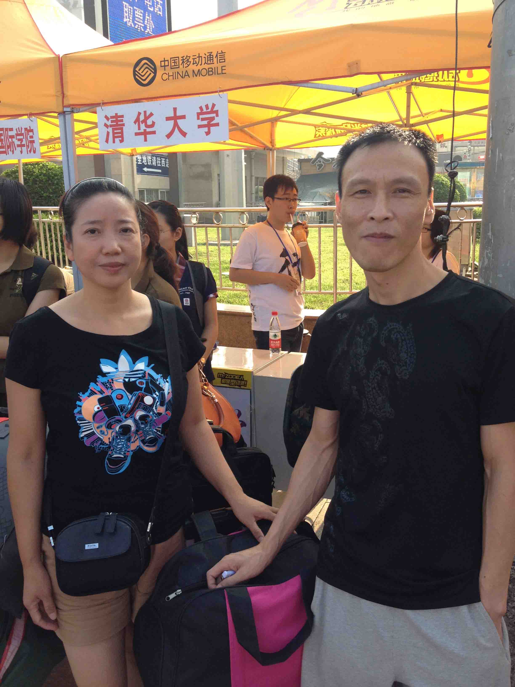

《失落沙洲》 杨知行
马蜂在一个夜晚发给我的一首歌，歌词句句唱入内心。搬抄自歌词：
我不是一定要你回来，只是当又一个人看海，回头才发现你不在，留下我迂回的徘徊。
我不是一定要你回来，只是当又把回忆翻开，除了你之外的空白，还有谁能来教我爱。
我不是一定要你回来，只是当又一个人看海，疲惫的身影不是我，不是你想看见的我。
我不是一定要你回来，只是当独自走入人海，除了你之外的依赖，还有谁能教我勇敢。
1. 我想你不会喜欢我现在的样子。我想你依然在我房间，赖着我一直不肯走。 --- 《情歌》
2. 我也有点不认识现在的冯迭乔了，他已凭空消失。
3. 感谢匡导的长谈，人为自己活，需要有一颗强大的内心，虽然我已经失去了。
4. 突然发现大学最幸运的事情变成了两件，第一件还是那个你夏了的夏天，第二件就是能够认识并和肖迪成为知心朋友。
5. 车丢了，虽然是破得不能再破，但还是痛心了三天。再去买车的时候已经没有当年要拉风死飞的心境了，还是一辆一模一样的黑色清华牌。
6. 咦，突然发现这里好好玩，只有我一个人知道的secret base。说到《secret base》好喜欢这首歌，貌似第一句歌词的中文翻译就是：与你在这最后的夏天，抹不去的思念，斜阳里的微笑，渐行渐远。六月的微风吹散你的泪光，深深地铭刻心间，难以忘却。逝去的昨天，最美的期愿。
7. 干脆把这里当作日记本算了。
8. 告别CF和TC快两个月了，看着那戛然而止的rating曲线，翻开当时和家鸽那荡气回肠霸气凌然目空一切的聊天记录，还有要成为IGM和target的决心，以及要去TCO Final的梦想，连被采访的台词都想好了：当年rng_58也是先开1000的。可是想想真是一段笑话，因为现在的我已经快两个月没有写程序了。就像高三那个寒假的冬令营后突然告别OI，失去一分心境后写什么都无力了。你是对的，人有时候会因为某些事情某些经历突然彻底改变自己的想法，彻底改变对一个人的认识，彻底改变自己的生活方式。
9. 说到家鸽，当时欣赏他的聪明于是推荐他去学习算法竞赛。他进步的速度让我感到既震惊又欣喜，但是为了让他更有动力去学习我似乎是一个表面上很装逼很高冷的人，从来没有对他有过任何一句夸奖，有的只是各种挖苦和鄙视。本来是和他一起进步一起追逐，现在看到他CF已经快冲到2000分了不禁感到非常欣慰。很抱歉对于算法竞赛现在内心空洞的我已经没有心境没有动力去继续了，不过家鸽你现在就是我这条道路上的皮卡丘。去吧皮卡丘！
10. 还记得大一和上学期在忙自己事情的时候，接到爸妈打来的电话有时候会表现得很不耐烦，总是匆匆挂断。最近听到妈妈声音的时候浮躁的内心会突然平静下来。
11. 很久都没有听到这句话了，不过现在想对自己说一句：好自为之。
12. 很晚的时候马蜂突然要找我谈心，在撕心裂肺的措词中我知道他分手了。出奇的是我们之前能够分享一切，在那个时刻我表现得非常冷淡漠不关心。他想告诉我他为什么分手，我说我不想听。他说他想写一篇日志来做为回忆，我劝他不用折腾自己。他说他想用我之前教过他的白图藏字小秘密来发表一些说说，我说不用发这些有的没的。他说他现在很难受，我说我帮不了你这你得一个人承受。还记得之前的我特别喜欢在社交平台发表状态来表达自己最近的经历和心情，高三那个暑假还给马蜂写过一篇最长的日志来炫耀我们之间的基情，那篇日志现在貌似还在我空间置顶。最近的我特别想逃离人人逃离空间逃离朋友圈这些社交平台，自己的心情只有自己明白，自己做的事情可能在别人眼看起来很幼稚但这也是我最近选择的生活方式。最后他问我现在发展得怎么样了，我说我累了睡了晚安。

13. 最近陈经常会闲来无事让我推荐好听的歌，我把我的歌单都给她了，其实我平时都是单曲循环歌也不多。对于陈，我之前一直觉得自己这生都很愧对她，但是现在不了。我似乎曾经跟你提起过她，但是一直不敢细说，怕去跪键盘。还记得高三那个暑假她突然找到我，说她暗恋我6年了。当时我觉得非常震惊，居然会有人能注意到我。后来我的好闺蜜告诉我，她似乎想来北京，按照她高考的分数她可以去厦门大学一个她原本很喜欢的专业。我不想有罪恶感，于是我对她说千万别因为我而改变原来的你自己。可是她最后还是来了北京政法大学，在八达岭长城脚下，这不但没有让我觉得很感动，反而让我产生了厌恶。之后我一直都刻意去避着她，终于在大一一次聚会散场的时候，她冲过来拉着我哭着对我说为什么要躲避她为什么要拒绝她。当时我说了啥我都快忘了，但是有一句现在想想非常炫酷非常装逼的话还记忆犹新：我喜欢比较独立心内强大的女生，你内心太懦弱了，居然会为了一个不重要的人放弃自己喜欢的未来。说完便觉得语重了，略感不妥，于是乎补了一句：可能以后的我会后悔我现在做的决定，但是现在我对你的回复就是，不行。当时觉得我这样做简直是要孤独一生的节奏了，可是命运还是让我遇见了你。
14. 完了这两个月活得太憋屈有话不能说发现这个地方之后根本停不下来了。这本来是给你做女生节礼物的网址，当时好不容易申请到域名的时候离女生节只有没几天了，又不想做得太简单太匆忙被你嫌弃，就决定去叠玫瑰反正网站建设慢慢来以后可以做生日礼物。现在这里居然变成了我的倾诉地，想想你以后也许也看不到这里了。
15. 一位高中同学前段时间追到了一位学妹，昨天饭天下。我怕去当木桩，就很礼貌地拒绝了。送祝福的时候我想了想，对他说以后有机会一定要带妹子去天津玩一玩，还要上一下天津之眼。他似懂非懂地回了个嗯。之前和你去过一次天津，那个晚上真是我最奇妙的经历。虽然脑子一片空白但还是在天津眼下和你扯了好几个小时，当时的我一直盯着河面，看着对面高楼顶端的灯在河里的倒影，迎面吹来的风偶尔会让河面泛起波纹，那样的场景闭上眼都能想象出来，仿佛就在昨天。
16. 现在一个人的日子也闲了，经常会想起这学期开学那个月一起过的时光。从现在的我看当时的我就像是看着一个幼稚的孩子不停地无端猜忌发脾气。那段时间对你有太多的牵制和依赖，无时不刻徘徊在你的左右影响着你的心情，现在想想真是傻。
17. Do those paper roses fade?
18. 从小到大一共见过三次女生哭泣。第一次是小学当着全班的面出班主任的丑把她气哭了，第二次是那个聚会后的夜晚陈哭着对我发问，第三次是和你在万人吃午饭的那天。当时自己的感受是小学的懵懂无知，第二次的措手不及，还有对你说不清的愧疚。
19. 刚才又整理完了桌面，清理掉了所有无用的文件。猛然发现现在的桌面和上学期几乎是一模一样的，除了壁纸已经从萌妹子变成DotA2的幻影刺客。还记得我那天给你说的那句话吗：You're such a cool assassin, but don't change yourself。不知道当时的你是怎么理解的，幻影刺客是我DotA2最喜欢的一个英雄，刺杀就是幻影刺客的信仰，从未失误，都是一击毙命。你当时只是一瞬间就刺痛了我的心，但是不知道为什么我就是喜欢上了你这点。当时喜欢上你也是因为你的独立你的与众不同。壁纸之外还有几个文件仿佛半年都没动过，那是你留在我桌面上的。第一个好像是你们当时马杯篮球赛半决赛对阵自动化前一起改的头像，第二个第三个是你当时在我电脑上写物化小论文时截的图：生物体中部分氧化——————还原体系的标准氧化还原电势，第四个第五个就是你当时交物化小论文留下的文件。半年了，其他的文件添了又删，删了又添，但这五个文件一直都在。

20. 晚上想起了一些还来不及说出口的话和做的事。还记得当年你吐槽为什么计算机系的男生都那么饥渴那么屌丝，见人就表白，还一直把我往高冷的方向培养。还记得你那次哭泣吗，因为我跟我女闺蜜的事情你第一次在我面前流泪。自从有了你之后我发觉自己越来越难以把握和女闺蜜之间的关系。还记得你曾经吐槽过我老喜欢吃刘佳的醋，其实我当时的心情跟你那时候的心情是一样的。当那件事情之后，我就和女闺蜜渐渐地疏远，她也不再向我诉说一切，不再向我吐槽她现任的种种，我也不在把我们之间的秘密告诉她，感觉这样之后彼此的生活惬意了很多。每次听到你嘲笑男生饥渴无脑表白的时候我就会问自己内心的想法，虽然当时我们开始的时候几乎可是说是电光火石，但是那几天我每天回寝室都会不停地问自己内心深处的想法。开始的那一天我只想用一生的时间向你证明忠心。这段恋情开始的时候我的很多朋友甚至是我的爸妈都跟我说过，人的第一段情感都是积累经验的。不知道为什么我就是不信，就是想仔细经营。想起自己曾经跟家鸽扯蛋的时候，聊到我跟你毕业以后的事情，家鸽非常诧异地表示我居然已经想那么远了。还记得你曾经给我做过一个爱情测验，貌似是给你一些数字然后选一个吧。当时你告诉我的答案我好像已经忘了，不过后来我偷偷摸摸去网上查了一下，发现并不是你跟我说的那个，而是：想结婚了。
21. 虽然无法亲口对你说出这三个数字：520。
22. 最近不知道为什么一有空就想往里面加些东西添些话，虽然除了我不会有任何人能看见。可能有的时候有些话没人能够倾诉的时候只能说给自己听，有些时候特别想跟你说话需要你的时候，拿起手机对着你的聊天框把信息打了又删删了又打，最后都是没能发出去，我想你现在已经不想再让我打扰你的生活了吧。这学期开学以来我一直是在打扰你的生活扰乱你的情绪左右你的想法，有些平淡的相处心态似乎只有在分开一段时候后才能领悟得到。
23. 早上英语课实在无聊就找到女闺蜜聊聊天，距上次聊天已经过了将近半个多月了吧。这种感觉真是好，久违的知心朋友即使很长时间不联系，突然说起话来又能回到最贴心的感觉。小谢说了很多她最近的心情，突然问我说：冯迭乔今天是520耶，如果我向你表白你会不会接受我呀。我回了一句：你敢。其实这么长时间和一个异性朋友保持这样的关系是一件很不容易又很难的事情，尤其是我遇见你之后我发现自己已经不能再跟小谢分享一切了。记得有一次小谢跟我聊天的时候说起过她曾经有一段时间对我有过好感，这不禁提醒了我，好像高二那段时间我也对她有过好感，但那时候大家都选择了保持沉默。那时大家的选择在现在看起来还真是最好不过的结果。虽然现在的小谢已经不如之前那么贴心，但也还是一直在最近的距离之内，什么时候想说话了就能马上找回来。还记得一个月前我在一个无光的夜晚向她一股脑地吐着我的苦，当时她也没有怎么开导我，只是说了一些无关紧要的安慰话。在彼此说完晚安等我睡着之后她给我留了一句话：我很期待你们彼此更加成熟内心更加坚强之后再度相遇的那一刻。第二天早晨收到这句话的时候感觉是这几天最温暖的话，胜过一万句其他人的想开点、过去就好了、没事啦。真的很感激能够在人生的青春期遇见并和小谢成为知己。
24. 最近想起很多童年的人和事，仿佛童年还在我的背后徘徊，但当我转过身去的时候它就消逝不见了。说起童年，不得不提的就是晓。好像我之前很少跟你谈起她，也许是因为没有时机，也许还是因为怕去跪键盘。不过在这里我还是想把我跟晓的故事说给自己听。从幼儿园一个班的捣乱双子星（因为她也是双子座的），到小学初中的九年同桌，我想说青梅竹马这四个字形容我跟她真是一点都不过分。从小学开始我跟她就经常去彼此的家里玩，她爸妈对我特别好，而且她在我爸妈面前也表现得非常乖巧。还记得幼儿园时我经常被她欺负，小学后力气大了就经常拧她的手，结果她一气之下去学了跆拳道，初中之后我的生活就非常悲惨，一直活在要被她教训的阴影中。其实她在我面前从来都没有展露过一丝丝的武力，初中吵架吵到最激烈的时候她也只是甩我一个哼然后转过头去，不过这种情景最多持续一节课。很多人都觉得我跟她是青梅竹马天作之合，但我跟她之间似乎一直隔着一层薄纱，虽然可以亲密无间，彼此都把对方放在心里很深很深的地方，但是我跟她之间还是谁也没有选择再进一步，哪怕是一小步。其实我早已知道大家高中会去两个不同而且很远的城市，她选择留在宁海最好的宁海中学，而我选择去了镇海中学。可是毕业那天我心里还是有点小伤感，但还是彼此拍拍肩膀互相勉励，反正之后又不是不会再见了。高中很少跟她联系，但是经常会听到她的消息。比如说会听说她跟某男生晚上放学一起回家，我知道这跟我没什么关系，但还是会追问到那人是谁是几班的。有一次我跟一名女生的绯闻传到了她的耳边，晚上她在网上用很调侃的语气问我：哟小子在外面混得不错嘛。大学之后彼此可以说是彻底断绝了联系，因为之前每次相遇的时候都觉得很尴尬无话可说，能说的也全是小学初中的种种回忆。就像你所说的那样，人与人之间发展的轨迹不同，快的人不会等慢的人，大家的想法和认识肯定会分道扬韬。凑巧的是她大学学的也是医学，在温州医学院，而且性格也跟你有一点类似，进可汉，退可萌，还会武术，但是从来没有在我面前展现过。最后一次见晓是去年暑假，在她家抱了抱她刚出生的弟弟。那天中午在她家吃饭的时候她爸妈笑着让我给孩子取一个名字，我当时觉得这只是开玩笑一样随便问问，一瞬间想到了瑶，男孩，于是回答说：路遥怎么样。暑假快结束的某一天，她在微信里跟我聊起的时候，说她爸妈已经把她弟弟的名字取作祝路遥了。人生就是这么的奇妙，即使有些人你认识并走得很近了十二年，即使身边的所有人都觉得我跟她是天作之合，即使彼此的家长都互相默许，但我跟她最后还是选择去维护友谊做最遥远的朋友。有些人也许只是一个认错的背影，只是一个小小的程序，只是一句慵懒的去吧皮卡丘，就能让我心里突然产生一种感觉，那就是我等了十九年的人。
25. 似乎阳光长跑已经成为这样一项活动：在紫操刷完两次卡后去C楼逛一圈回来刷第三次。最近C楼的绿豆沙冰很火，是啊，都一年了，又是夏日甜美的味道。不知道为什么我每次去C楼都会远离那个放满沙冰的冰柜。去年的夏天似乎一直充斥着一股冰凉的甜味，那几个晚上傻乎乎地不厌其烦地问你想不想吃绿豆沙冰想吃就下来拿一下嘛，然后你就既害怕又难以抗拒地下来了。在紫操跑步已经能看到很多身着红色绿色紫色黄色白色衣服的影子了，仿佛也能看见那一红一绿穿梭在校园里的背影。这个夏天我对绿豆沙冰产生了一种无形的抗拒，虽然可以想像得到它那不变的甜味，但也只是它的味道是甜的。
26. 在匆忙的晚上赶完了高性能的作业，与其说是赶完的，不如说是改完的：拿着家鸽的作业改来改去就交了上去。开学的时候对高性能这门课嗤之以鼻，认为这种程序课对我来说简直就是白送的满分课程。晚上真正开始写的时候痛苦地发现自己的手已经无法流畅地打出之前熟悉到不能再熟悉的旋律。敲了三次才勉强把头文件和main框架写对，然后写剩下部分的感觉就像在一架破旧坏了很多琴键的老钢琴上弹奏，音色也已经不准，琴键也没有之前那么灵活。然后我就放弃了，直接拿家鸽的程序改了改就交了上去。好像这是当年交给你的最基本的框架，不知道你还记不记得，我怕我以后真的忘了，在这里再重新写一遍吧：
#include <iostream>
#include <cstdio>
#include <cstring>
#include <cstdlib>
using namespace std;
int main()
{
return 0;
}
27. I got really upset and slowly went to bed, hoping this was just a dream.
28. 如果以后我能有一名女儿我一定要给她取个英文名叫Mirana，如果是男孩的话就不管了（重女轻男的思想真的好吗正常吗喂，我就是喜欢女孩不服气你来咬我啊）。
29. 这一段，写给这些时间陪我走过的DotA2。还记得去年暑假刚开始的时候，我的生活就是英语夏令营＋DotA2的旋律。然后后半程的旋律中DotA2已经渐渐淡出我的视线。还记得最后一次跟你吵架之后第一次打开DotA2的那一刻，似乎旧地重逢，看到了依稀的景色，景色时隔一年没有变化，到访的人也没有变化，一切似乎还是尘封在一年之前的样子。不知道为什么我又开始重新开始玩DotA2。最大的感触是自己心态的变化，还记得一年之前，争强好胜的我经常会因为队友的一些失误而喷他们。那时候自己的心态就是这个比赛我要赢，很难容忍队友犯下的错误。如果是自己犯错也很不甘心去主动承认，虽然心里会骂自己千百遍。旧地重逢的时候发现自己的内心已经苍老了，失去了那一份血性，失去了对胜利的执着。面对队友失误的时候更多的是几句调侃和玩笑，自己犯错的时候也会主动请求原谅。很诧异地发现这两个月的胜率相比起一年前出奇的高，比起一年前如此求胜的自己，现在的我已经能做到心平气和地去面对每一位队友，能够匹配在一起打完一场比赛其实是一种很难得的缘分，大家也更加愿意去合作而不是吵架。游戏里面是这样，游戏外面我发现自己的性格也逐渐变了。以前遇见好基友的时候都彼此用傻逼互称，粗话连篇，认为这就是关系好朋友之间理所当然的事情。现在遇见好基友的时候闲话突然变得少了，经常会去过问对方最近的情况，抱怨自己生活的艰难。如果说两个月前自己还只是一个心内浮躁不安，喜欢对你发脾气，什么事情都迁就你离不开你的小孩子，现在的自己应该是多了几分淡雅和宁静。
30. 《红尘客栈》的旋律，你还记得吗？
31. 昨天晚上莫名其妙地对家鸽发火了，说了很多听起来很刺耳的话，现在想想自己真是没事找茬，其实当时说完那些话后自己就后悔了。鲁逸沁最近给我取了个外号叫方差哥，他说我情绪波动非常大。还记得有几次肖迪想陪我出去走走或者说说话的时候，我很无奈地让他先别理我，just leave me alone，真是很怕说出伤害他的话。可能我在家鸽心目中的形象一直不是非常健康向上的那种，上学期我对他几乎可以说是苛刻，凡事都没有夸奖只有嘲讽和挖苦，最近这段时间我对他几乎可是说是各种冷淡，凡事都没有那种好基友之间的言语，有的只是很生冷的客套。可能我就是那一种无法表达内心的人，表现出来的跟内心的想法可以说是截然不同。记得上学期我非常喜欢家鸽的才华，对于他的进步和努力我是十分吃惊，还有一种在大学能遇到这样有共同语言能理解彼此想法的好基友的庆幸。可是我表面上似乎永远只有对他的否定，对他无止尽的要求和鞭策，对于他能在短时间内做出三题这种行为我也只能回一句“才三题，别学了滚回去好好搞文化课吧”而不是“家鸽你好棒”。还记得我倒数第三场CF，那一天是三月十九号，也就是我跟你最后一次吵架的那个夜晚。那一场心情扰乱已经无心再战的我彻底输给了家鸽，这好像是我人生中第一次在一场正式比赛中输给家鸽。记得那一天晚上我觉得自己的心已经彻底累了，那一次没有跟之前一样骂自己比赛时候是有多傻逼犯了那么多傻逼错误，而是坦然接受了这一切。人生第一次祝贺了家鸽几句后我就洗洗睡了。再十天之后，你提出要跟我分开生活的那个夜晚，我做完最后一场CF就彻底告别了这个曾经让我狂热的比赛。不知道现在的家鸽对我的认识和想法是怎么样的，应该已经是看不上眼了吧。我觉得大学一件很难得很珍贵的事情就是能把自己高中最爱的竞赛理念传授给一个高考上来的人，因为来了大学我发现高考党很难理解我们这群竞赛生的想法。还记得曾经有一次问家鸽如果再让你选择一次的时候你会选择高考还是竞赛，他想了想回答说是竞赛。一直到现在我还是非常喜爱家鸽的才华，曾经在他不在的时候无数次对他舍友说起过家鸽很聪明，也曾经无数次对你说起过家鸽是小天才，可是在他面前我就是一个喜欢装逼目空一切的人。昨天很深地伤害了家鸽，伤害了我大学最欣赏最“喜爱”的人。世界上每个人身边总会有好人和坏人，好人比较容易展现自己的真心，更多的是鼓励，坏人就是比较擅长伪装自己的内心，更多的是否定。可能对于家鸽来说，你就是一位好人，而我就属于那位坏人。
32. 说到好人和坏人，我不禁想起了最爱的爸爸和妈妈。从小到大，妈妈就一直扮演着好人的角色，而爸爸是一个不折不扣的坏人。在爸爸眼中，我取得的所有成绩都只是一张废纸，他对我的要求永远是我觉得达不到的高度。还记得小学有一次期末考试我语文数学考了双百，还能回想起当时妈妈脸上的笑容，把我抱在怀里亲了又亲。还记得当时爸爸一言不发，我特意把卷子递给他看的时候，他不耐烦的推开继续做他的事情。爸爸给我制定的目标在我当时看来都是遥不可及的天际，我不敢告诉他我做不到。还记得有一次我终于受不了了，冲他大吼：你大学不就是体校毕业的吗，有什么资格对我要求那么高。我本以为他会打我，可是他没有。小时候不懂事吧，一直非常讨厌这个爸爸，喜欢跟他做对，喜欢找些事情让他不开心，他在那时候我的心目中就是一个十足的大坏人。本来以为会一直这么讨厌他下去，直到我高一的那件事发生。初中毕业的我以全校第四的成绩考入镇海中学，但是半学期后我已经发现自己彻底丧失了学习文化课的兴趣。那时候我告诉家里人，我不想读书了，我想要去搞竞赛。后来才知道那段时间家里有多困难，爸爸和妈妈两个人在家显得格外寂静，很少说话，妈妈想着想着会低声啜泣，爸爸会点支烟看着窗外发愣。当时我的已经做好了破釜沉舟的准备，至于你们支不支持反正我就是不想好好读书了。九年品学兼优好学生的形象在那一刻彻底在爸妈心中粉碎，我本以为他们都会反对我，至少爸爸肯定会，爸爸一直就是一个坏人。那段时间爸妈吵架吵得很凶，爸妈都为这件事情争执不定。最后爸爸说服了妈妈，说服了班主任，说服了教务主任，说服了喜欢在开大会上点名批评我的副校长。那一次，爸爸第一次对我说：儿子我觉得你行，好好去学吧。很难想象那时候自己的心情，在自己心中当了十五年的坏人居然肯定了自己。当时的我不知道爸爸是无奈的妥协还是对我的肯定，但那时候自己就像是打了鸡血一样日以继夜有一顿没一顿地学竞赛，最后我以高二一年各种比赛完美的表现征服了所有人。爸妈那么多年来一直扮演着好人坏人的角色，但是现在看来都是我最感激最可爱的人。我似乎从爸爸身上继承了他的这点，不爱说好话。话说回来，对于家鸽虽然我表面上总是否定，但是内心上是绝对的肯定和欣慰。那时候的爸爸应该也是这样吧，虽然不会当面夸奖我，但是从小到大他应该都很欣喜我的每个进步和取得的成绩。

33. 终于看完了《追逐繁星的孩子》，还一直沉浸在故事中。不知从什么时候开始一直把生死看得很淡，认为人的死去只是一种自然规律，把生命看淡就好。看完这部电影后突然产生了对死亡的恐惧和敬畏，看到了生命的渺小，人与人之间最悲痛的生死离别，这个世界的美丽和残酷，虽然无法体会但是还是见识到了失去的真正意义。活着真好。
34. 不知从什么时候开始，我一直是畏首畏尾地在一旁偷看你的生活。不知从什么时候开始，删除浏览记录已经成为了我的习惯。不知从什么时候开始，只能通过你的一些零零碎碎的状态去猜测你最近的心情。但是一直以来，特别关注的提示一直能让我立刻放下手头的事去聆听你的状态。我想你已经厌倦我整天粘着你的生活了吧，虽然我过得很悲惨，但是又不敢去打扰你的生活。只要你觉得怎样的生活能让你过得开心，我都会选择去支持你。
35. 最近口头一直挂着一段旋律，是我自己哼着哼着哼出来的，无奈没有能力把它写成一首歌。那一段时光你经常会在我的后座上哼《我的秘密》，还记得唱到某一句话时，调皮的你会故意很快带过，但那句话会在我心里回荡很久：我心里的秘密，是我好像喜欢了你。
36. 滑开手机的那一刹，发现壁纸已经半年没改了。锁屏还是rng_58，主屏还是你。一个是我最崇拜的人，一个是我最爱的人。现在的我看着rng_58已经沉默地说不出一句话，真的很怀念很怀念那段每天追逐rng_58的日子，对rng_58又是敬佩又是不服气的日子，一心想超越rng_58的日子。是不是该换锁屏壁纸了，但是我想了想，还是算了。还记得很久之前有人问我为什么手机桌面整页就一个微信图标，难道我是微信的资深粉丝。我笑他看不穿。
37. Indeed sorrow brought me adultness.
38. 我真的特别害怕，特别特别害怕，甚至是感到恐惧，在我一个人很难受的时候，在我不想被打扰的时候，在我快要失去理智的时候，会说出一些伤害身边人的话，哪怕是最近的人。愿你们不要放在心上。

39. 现在是2014年5月25日5点29分，恭喜皇家马德里夺得欧冠冠军（为了不被删好友我都不敢发状态或留言我会乱说？）。
40. 今天因为要找一些旧的东西，在旧电脑上捣鼓了很久。心血来潮登录qq的时候发现上面的资料还是多年之前，又看到了熟悉的网名。小学初中九年的网名都是瑶瑶玉醉，起因是有一次玩梦幻时看到一个小龙宫站在我面前，头上顶着瑶瑶玉醉四个字。当时觉得这个名字非常诗情画意，就拿来自己用了。从此之后我的qq昵称和几乎所有游戏的id都是瑶瑶玉醉。高中三年的网名想想就想笑：天使在夜里哭。这本来是一本恐怖小说的名字，初三那个暑假看完这本书后觉得太赞了，然后这个网名就陪伴了我高中三年。还记得打魔兽世界的那一年，团长喊我的时候都是喊天使天使，因为我当时玩的是奶妈，所以心里就觉得特别得瑟（应该是心理阴暗吧喂，一个抠脚大汉跟天使有毛个关联啊）。现在已经基本放弃瑶瑶玉醉和天使在夜里哭这两个网名了，简直有一种乡村非主流的赶脚（最萌四号床难道不是内心阴暗的我硬是要秀自己萌萌的内心吗喂，我有毛线个萌点你说啊）。至于英文名则一直是glassices。这个id貌似是我自己取的，因为小学时我特别喜欢吃一种名叫“冰の心”的棒冰（应该已经绝迹快十年了吧），长得就像一块四方形的玻璃，这个英文名就由此而来了。
41. 发觉最近的自己经常会想起一些过往的事情，因为青春就是用来怀念的。还记得大一时致青春上映的那段时间，我跟陈娜还处于搅不清的关系中。首先我不是很喜欢文科女生，再加上班级有一位男生每天因为她而找我麻烦，那段时间自己可以说是过得心烦意乱。那天陈娜约我去看致青春，我还是去了。回来的路上已经很晚很晚了，一路上两个人骑着车一言不发，各自想各自的心事。我知道她有话想对我说，但又不好意思说出口，其实我也不想她说出来。最后还是一起沉默了一路。分开的时候说了声再见，之后就真再见了。没有遗憾，感谢那些出现在我青春里的人。记得刚开始彼此接触的时候，陈娜问了我一句话：你觉得女生都很在意男生的外表吗？当时情商为负的我居然听出了这句话的内涵：我不是很在意男生的外表。当时我怎么回答的我已经忘了，不过现在回头想想：特么你当时想骂我丑你就直说啊。之前手机里还保留了一些她的照片，不过遇见你之后全删了，毕竟还是怕去跪键盘。
42. 怎么说呢，今天好像知道了一些关于刘佳的事情。就像跟我之前一直担心吃醋时想的一样。我也觉得这次吵架背后没有那么简单，一定有人在一边推动。其实很早就感觉出来了，就像被一个人一直看着自己的笑话一样。哎，人生就是这样。你嘲笑我的小心眼，感叹灵魂伴侣的不容易。那时候的每句话在我心里都是重重的刀割。很早之前在人人上看到一篇挖墙脚的好文章，当时收藏了。刚才又翻出来看了一看，发现自己打字的手都在抖动。
43. 抽空又把《Angel Beats》看了一遍，这种经典之作看多少次都不会觉得厌啊。高一的时候狗子哥推荐我去看，也是我进入动漫圈看的第一部。那段时光天天在coding的时候循环片中的《Brave Song》和《一番の宝物》。现在看着Happy End最后那一幕偶遇，我已苍老枯萎的心是否还能再跳动一次？
44. 不知道为什么，开始有点期待一年前两个曾经错过的失意少年再度相遇。
45. 循环着《魔鬼中的天使》，已经能情不自禁哼出来：你是魔鬼中的天使，所以送我心碎的方式，是让我小岛最后一秒为止。这些天来要感谢好多人，感谢家鸽对我起伏不定忽冷忽热的暴脾气的容忍，感谢肖迪每天想方设法把我从泥潭里往外拉，感谢英语小组上的两个学弟学妹天天在我面前叽叽喳喳闹个不停，感谢舍友能够容忍我在很多天的凌晨4、5点上床，感谢匡导的长谈，那个晚上匡导也向我吐诉了感情走到毕业季的不易，感谢鲁逸沁面对我时永远笑呵呵，看着他开心地样子心中的负能量似乎都能暂时消散，感谢小谢又一次成了我的精神导师，记得上次还是在高二。感谢一直陪伴在我身边的你们，你们都是最可爱的人。最后，感谢你，感谢你带给我的成长。
46. 应该是最后一条更新了吧，感谢一位陌生老朋友的彻夜长谈，在一起互相吐槽上一段感情经历还真是前无所有的经历，终于让我如释重负。
47. 我真是，好久没那么开心过了！！！请允许我禽兽一般地大笑七声：
哈
哈
哈
哈
哈
哈
哈
48. 跟马蜂聊着聊着又聊到了彼此之前的一段感情，好奇怪我以为自己已经能做到不去想你如释重负，好奇怪前一个晚上我跟家鸽扯淡的时候还在不停说你坏话吐槽你的种种，好奇怪自己已经能做到笑着拿起放下许久的笔笑着面对每一天，为什么在那一刻我的思绪又被你拉到那最深沉的湖底，那个我曾经深处的看不见光无法呼吸的世界。好奇怪自己已经能做到跟人聊起你和你的男闺蜜时，我能开怀地说一句一个人一生能遇到一个灵魂伴侣就已经很不容易，走到一起更不容易，祝他们幸福。以为自己的心不会再痛，但是听着马蜂给我的《失落沙洲》一切坚强的内心仿佛又被击碎，我发现自己还是那一个柔弱的自己。这些天发生了好多好多狗血的事情，一个学妹竟然向我表白了。想想也不奇怪，一年前的这个时候我们彼此也都是非常向往美好的爱情，空气中散发着荷尔蒙的清香，感性掌控了理性。一年后的现在自己的内心已经是如此苍老，不会再跳动，最后稍微思考之后我还是把她拒了。
49. 我曾经想死，因为还没有与你相遇，因为有像你这样的人诞生，我对这世界稍微有了好感，因为有像你这样的人活着，我对这世界稍微有了期待。
50. 今晚好开心，因为马蜂好像又找回了他的女神。他结束上段恋情后魂不守舍了2个月，那段时间我也可是感同身受的。今天他发现他原来跟他之前的女神都彼此喜欢，多么美好的故事结局。尽管如此我还是唠叨了一句：不要为了谈恋爱而谈恋爱哦。是的，我们现在开始以后遇到的每一个人，都必须担负起责任，而不是单纯的小孩子你喜欢我我喜欢你了。